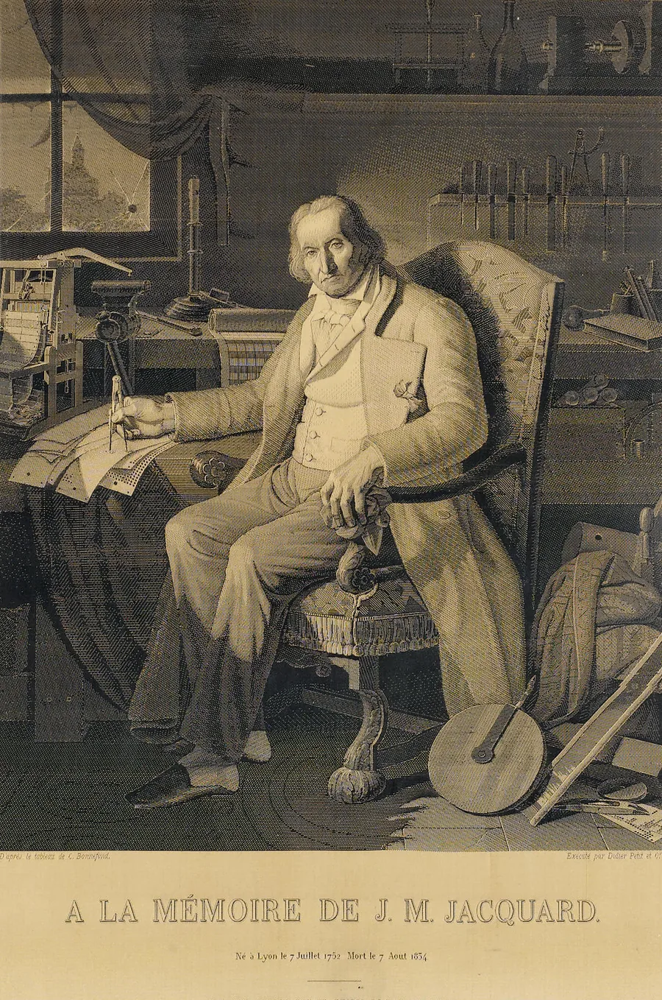
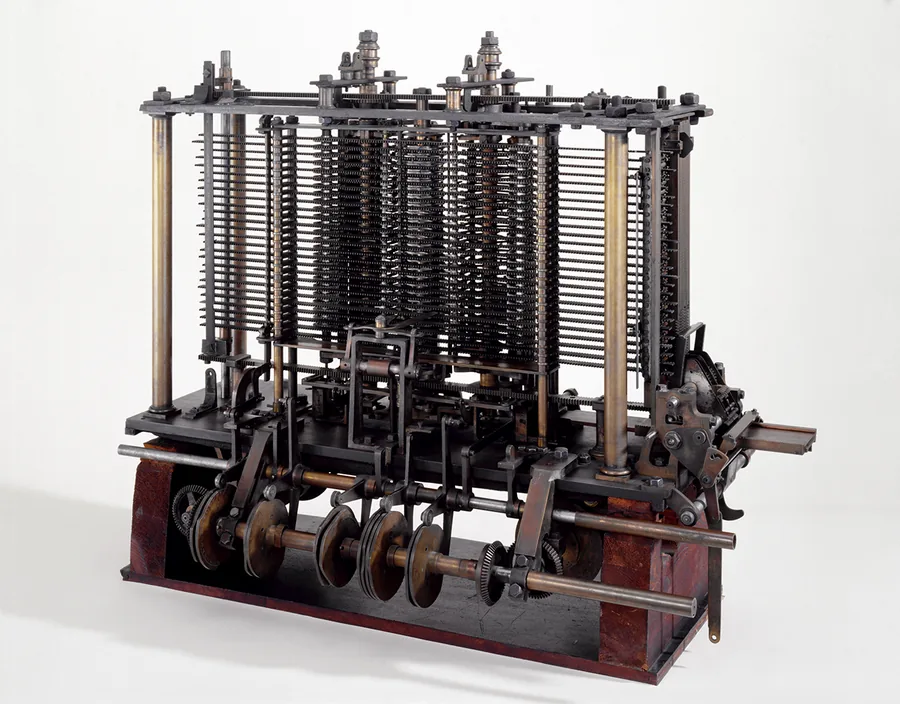
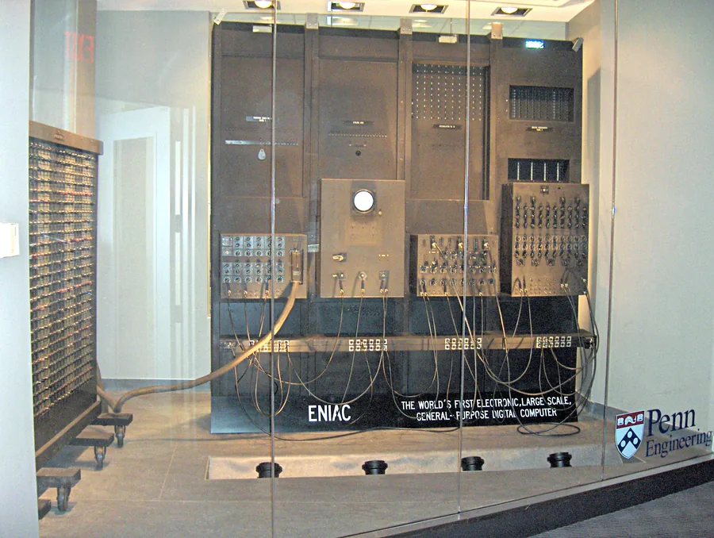
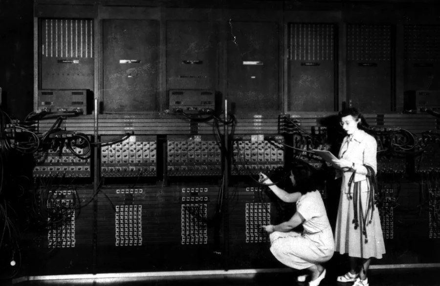
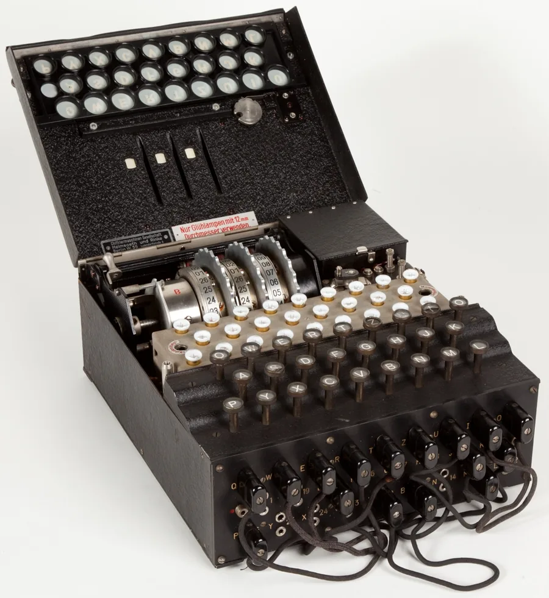

Primórdios e pioneirismo
Séc. XVIII – 1969 · do tear de Jacquard à ARPANET
Top Secret
Como era
A palavra computador ainda era um cargo: pessoas contratadas para fazer contas à mão. As primeiras máquinas eram de relé ou de válvula, ocupavam salas inteiras e eram reprogramadas religando cabos, o que levava dias. O gargalo real da época não era calcular, era armazenar — a memória ia da linha de retardo de mercúrio ao tubo de Williams, até chegar ao núcleo de ferrite.
Não é uma invenção só: é a sequência que constrói a computação.
O tear de Jacquard (1804) tira o programa de dentro da máquina. A Máquina Analítica de Babbage (1837) projeta o primeiro computador de propósito geral. Boole formaliza a lógica (1854), Turing define o que é computável (1936) e Shannon liga álgebra booleana a circuitos elétricos (1937). Vêm Z3, Colossus, Harvard Mark I e ENIAC. Von Neumann publica o programa armazenado (1945). Fortran, LISP e COBOL surgem entre 1957 e 1960. A fase fecha em 1969, com o Unix e os quatro primeiros nós da ARPANET.



O tear não calcula nada — e é justamente esse o ponto. Pela primeira vez o padrão fica fora da máquina, num cartão trocável. Mesma máquina, cartões diferentes, resultado diferente. É a semente da programabilidade.
É a fundação teórica e material de tudo o que vem depois. Sem Shannon ligando lógica a circuito, a lista de máquinas não teria explicação de por que funciona.
É também a fase em que a indústria nasce de dinheiro público — censo, exército e programa espacial —, e não de genialidade isolada. A máquina tabuladora de Hollerith nasceu de um problema de estatística pública: o censo de 1880 levou cerca de oito anos para ser tabulado à mão. A empresa que ele fundou viraria a IBM em 1924.

As seis programadoras do ENIAC, marcadas em verde, foram apagadas da narrativa por décadas.
Painel de fios do Enigma

O Enigma tinha na frente um painel de tomadas, o Steckerbrett, em que se ligavam cabos entre pares de letras. Esses fios faziam parte da chave do dia: trocá-los mudava a cifra inteira.
Ligar o painel
Ver o efeito
A lógica por trás
Em 1937, Claude Shannon mostrou que um circuito de chaves equivale à álgebra booleana. É o que liga este painel de fios à lógica que rege qualquer computador até hoje.
Em série, a corrente precisa passar pelas duas chaves: a lâmpada só acende com as duas ligadas. Em paralelo, qualquer caminho serve.
| Chave 1 | Chave 2 | Lâmpada |
|---|---|---|
| desligada | desligada | apagada |
| ligada | desligada | apagada |
| desligada | ligada | apagada |
| ligada | ligada | acende |
"O Colossus quebrou o Enigma."
O Colossus atacava a cifra Lorenz SZ, usada pelo alto comando alemão. O Enigma era tratado pelas bombes eletromecânicas, em Bletchley Park.
"A ARPANET foi construída para resistir a um ataque nuclear."
Essa era a motivação de Paul Baran, na RAND. A ARPANET foi construída para compartilhar computadores caros e escassos entre centros de pesquisa. Larry Roberts e Bob Taylor disseram isso explicitamente. É o erro mais repetido em trabalhos escolares sobre o tema.
"A palavra bug vem da mariposa de 1947."
A mariposa foi encontrada no Harvard Mark II, não no Mark I, e o termo já era usado por engenheiros desde a época de Edison. A graça do registro no caderno é justamente a piada com um termo que já existia.
- Computer History Museum — linha do tempo e acervo primário.
- IEEE Annals of the History of Computing — artigos revisados por pares, onde as disputas de crédito são discutidas com evidência.
- Datas de vida das pessoas citadas conferidas no Wikidata; crédito das fotos na página de créditos.